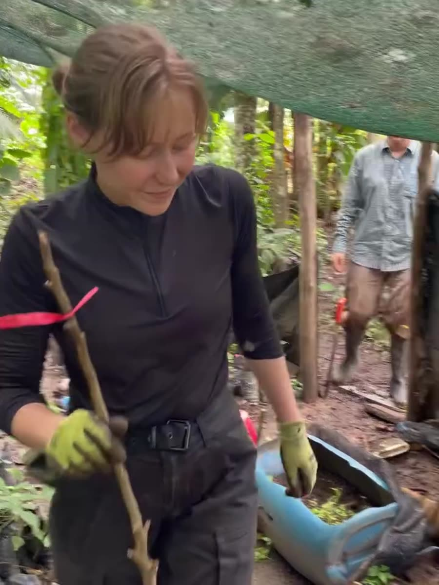

Current programme
B.Sc. Biologische Diversität und Ökologie
- University
- Georg-August-Universität Göttingen
- Started
- Winter semester 2026/27 (Oct 2026)
- Focus
- Applied biodiversity research · Ecology · Evolution & systematics

Field log · 2025 to now
Biology student at Göttingen, aspiring field ecologist.
I study Biological Diversity and Ecology at the University of Göttingen. Before that I learned in the field: on coral reefs in Honduras and South Africa, and in the Peruvian Amazon. I want to spend my working life doing long-term ecological field work.
5 mNow
In October 2026 I started a B.Sc. in Biologische Diversität und Ökologie (Biological Diversity and Ecology) at the University of Göttingen.
The programme is built around applied biodiversity research, ecology, and evolution and systematics. It gives me the science behind the field work I have started doing, and the grounding for what comes next.
Heading for
Long-term ecological field work

Current programme
12 mField log
Most recent entry first. Each one is a stretch of hands-on conservation work.
Log04
–
Marine Conservation Internship at the Whale Shark & Oceanic Research Center (WSORC)
≈ 16.1°N
86.9°W


0 mSurface interval
A freshwater detour: six weeks out of the sea and into the rainforest.
Log03
–
Amazon Conservation & Reforestation at Panthera Sanctuary, near Puerto Maldonado
≈ 12.6°S
69.2°W




Log02
–
Marine Conservation & Indian Ocean Reef Ecology with Wildlife & Ecological Investments (WEI), who run research programmes with Operation Wallacea
≈ 27.5°S
32.7°E


Log01
–
Member of the Neukirchen-Vluyn/Moers local group of BUND (Friends of the Earth Germany)

30 mCertifications
Diving qualifications first, then the rest of the paperwork.
Training recordDiving
Open WaterAdvancedRescue + EFR

33 mStudies
Since Oct 2026
Biological Diversity & Ecology · University of Göttingen
Focus areas: applied biodiversity research, ecology, evolution & systematics. Started winter semester 2026/27.
Sep 2018 – Jan 2023
FOM University of Applied Sciences
37 mBefore biology
Before biology I spent about five years in business. Field projects run on the same things: plans that hold, budgets and funding, contracts, and clear writing.
Coordinated the finance (FI) sub-project of LEMKEN’s SAP S/4HANA rollout. PRINCE2 Agile Foundation certified.
Five years in financial accounting, including help with funding applications.
Contract and insurance management, plus administration of subsidiaries.
Freelance copywriter for over a year. Useful for grant applications, reports and outreach.
Assistant to management from 2021 to 2025: admin, coordination and follow-through.
Feb 2021 – Feb 2026
Alpen, Germany. Financial Services & Tax group, Financial Accounting department. Assistant to management 02/2021 to 07/2025.
Nov 2023 – Jan 2025
Trained through a Copywriting MBA program (Oct 2023 to Oct 2024).
Sep 2018 – Jan 2021
Where my business years started.
42 mSeabed
If you run field projects in conservation or biodiversity monitoring, I would like to hear from you.
Languages